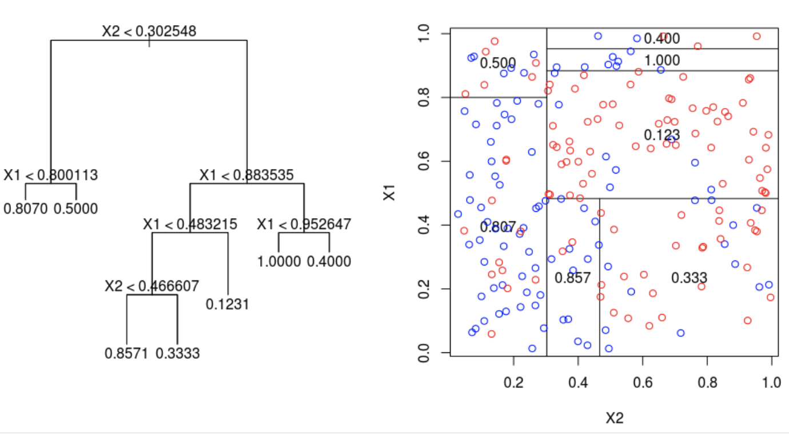

6 Classification
6.1 Summary
This week I learned more about applying machine learning methods to raster data. We looked specifically at two types of analysis - classification and regression. Such models utilise an expert system, which is a mechanism that draws conclusions from a knowledge base it was exposed to during training. Machine learning on raster images can be broadly divided into object-based and pixel-based analysis.
Decision Trees - Classification
This is an algorithm for splitting up the dataset into classes based on values of predictors. Decision trees are built up of decision nodes where data points are split, and end-nodes (leaves), which match the data that falls into that leaf to a particular class. Basically it’s classifying the data based on many if else statements. However, the mechanism for constructing such trees can be more complex.
In order to decide how best to split the data, several measures can be used, such that the decision nodes split the data in the most effective way. Methods include entropy, information gain, or the most commonly used - Gini impurity, which is calculated for every decision node, and takes the form of the equation below:
\[ giniImpurity(D) = 1 - \sum_{i=1}^{k}{p_i^2} \]
where \(p\) is the probability of datapoints belonging to class \(i\) at node \(D\), and \(k\) is the number of classes. When building the classification tree, the nodes with lowest Gini impurity are selected. The trees are evaluated iteratively, fitting lines to all groups and keeping nodes with lowest sum of squared residuals (SSR).
The problem of overfitting decision trees - when they learn too granular aspects of the data and cannot generalise to the unseen data can be combated in several ways. The most common method is pruning based on the weakest link. This means removing decision nodes, which are the least important in classifying training data into the correct classes. This is based on the tree score, which can be calculated using the function below:
\[ treeScore(Tree) = SSR + \alpha T \] where \(\alpha\) is the tree penalty parameter and \(T\) is the number of leaves. The process works by iteratively incrementing alpha. Therefore, pruning is used to build the tree, aiming to optimise the number of decisions in order to make the trees parsimonious. Cross validation can be used to find the best alpha.
Regression Trees
The same methodology of decision trees extends to regression problems, in which we need to predict a number rather than a class. The tree is built by splitting the dataset into groups along one of the axes, and a decision node is added at the point where the SSR resulting from that division is lowest. The first decision node is chosen for the predictor whose split results in the lowest SSR, and the process is repeated iteratively until the number of splits reaches the limit imposed by the modeller, such as minimum number of data points for a leaf.

Random forest
This method generalises the above by building many random decision trees. We have little control of how individual trees are built. However, many simple trees overall vote for the final prediction, which works very well for many problems. The training of random forests benefits from bootstrapping, which is a method that randomly subsets the training data, such that every tree is trained on a different subset. An out-of-bag hold out set of the data can be used to evaluate the trained model.
Support Vector Machines
SVMs are a method that finds a hyperplane in the multidimensional feature space, which best divides that data into classes. The method can benefit from applying kernel functions, which project the data points onto hyperplanes, which are easier to classify. The hyperparameters, which control the model can be tuned, e.g. using grid search, which tests many predefined values of parameters (very expensive), or using an optimisation algorithm, such as simulated annealing, swarm optimisation, or genetic algorithms.
Unsupervised methods
Additionally, unsupervised methods can also be used for identifying unspecified classes. Algorithms such as DBSCAN or k-means clustering, will assign data points to optimal classes, based on the patterns within it. When a cluster is identified that comprises two known classes, cluster busting can be performed, which is reapplying a clustering algorithm to that one cluster.
Applying these methods to satellite imagery can be done for every pixel, where e.g. a land cover class is assigned to every pixel (classification) or an index value (regression), and features are channels.
6.2 Applications
There are many examples of research papers applying machine learning methods to remotely sensed data in urban research. The first one I wanted to focus on here is a paper that takes a two-pronged fuzzy approach to classification, in that land cover classes are assigned probabilities to pixels, rather than definitive classes (Shackelford and Davis 2003). Similar classes such as Roads and Buildings would in such a case be most difficult to classify, especially since pixel-based analysis doesn’t consider spatial dependence. After performing pixel-based classification, the authors develop a second method, that performs object-based segmentation of the image based on similarity of classes in nearby pixels, which makes the output more consistent, resulting in an overall more flexible methodology.
Another paper by (Goldblatt et al. 2016) is aimed at identifying boundaries of urban areas using a pixel based analysis of remotely sensed data, using SVM and Random Forest models. The model outputs of pixel-based classification had to be post-processed to remove single pixels classified as urban, which smooths the final classification. Furthermore, the authors develop the model in GEE, which enables the research to be easily replicated for other countries, which poses opportunities for advancing future research.
6.3 Reflections
This week was actually quite unique as it offered a perspective on working with image data I had not considered before. Prior to this lecture, I had only learned about object-based analysis of images with convolutional operations, and specifically using neural networks to extract and encode information from images in order to classify or identify features from images. This lecture opened my eyes to much simpler way of working with satellite imagery that uses only pixel values of various bands (features) to predict such outcomes.
This enables the use of classical machine learning algorithms like e.g. Random Forests in the context of raster data, by treating is just like tabular data. This gets rid of the spatial dependence of pixels that are next to each other, which of course is a significant limitation, but such methods often can achieve the same performance at a significantly computationally cheaper cost than convolutional neural networks.